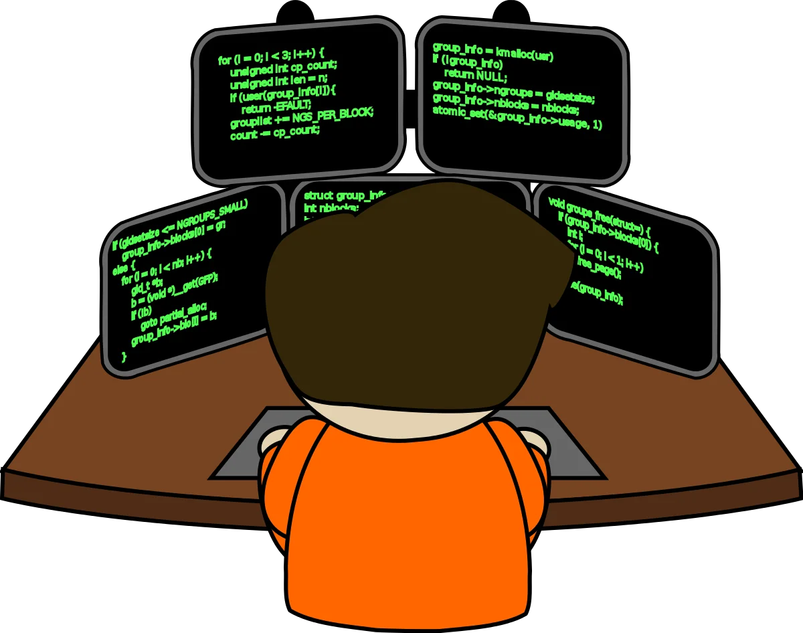

Главная
Контакты
Обо мне
Фамилия:
Кузин
Имя:
Максим
Отчество:
Андреевич
Дата рождения:
14.08.2002
Город:
Ульяновск
Место учебы:
УлГТУ
Факультет:
ФИСТ
Направление:
ИСТ
Почему IT?
Мой путь в сфере программирования начался еще в школе. Там, обучаясь в физико-математическом классе, я начал свое знакомство с языком программирования C++. Естественно, это были лишь простейшие алгоритмические операции. Еще тогда меня очень заинтересовала сфера новых технологий. Постепенно я начал изучать эту тему с различных сторон: пробовал себя в написании сайтов в консрукторах, изучал состав и работу ЭВМ, интересовался разными новейшими разработками. Так я понял для себя, что сфера IT - именно та, в которой я хочу в дальнейшем работать и развиваться. Я решил, что хочу поступать в УлГТУ. За два с половиной года я изучил предметы, которые дали неплохую базу для начала пути в сфере IT, например:
основы программирования
алгоритмы и структуры данных
базы данных
технологии программирования
И благодаря этому я уже смог начать свою карьеру в ФНПЦ АО НПО “МАРС”.
